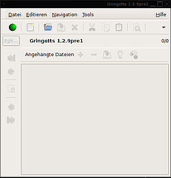
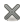

Gringotts
Dieser Artikel wurde für die folgenden Ubuntu-Versionen getestet:
Ubuntu 14.04 Trusty Tahr
Zum Verständnis dieses Artikels sind folgende Seiten hilfreich:
Gringotts  ist ein GTK-basierter, desktopunabhängiger Notizmanager, dessen Hauptaugenmerk auf Sicherheit liegt. Gringotts gibt dem Benutzer die Wahl zwischen zahlreichen Verschlüsselungs- und Kompressionsalgorithmen und schützt den Speicher, damit keine bösartige Software die Daten auslesen kann. Man kann Gringotts für alle Arten von sensiblen Informationen wie Passwörtern (Passwortmanager), Kontodaten, Telefonnumern, Notizen usw. benutzen.
ist ein GTK-basierter, desktopunabhängiger Notizmanager, dessen Hauptaugenmerk auf Sicherheit liegt. Gringotts gibt dem Benutzer die Wahl zwischen zahlreichen Verschlüsselungs- und Kompressionsalgorithmen und schützt den Speicher, damit keine bösartige Software die Daten auslesen kann. Man kann Gringotts für alle Arten von sensiblen Informationen wie Passwörtern (Passwortmanager), Kontodaten, Telefonnumern, Notizen usw. benutzen.
Seinen Namen hat das Programm von der als einbruchsicher geltenden Bank Gringotts in der Romanreihe Harry Potter.
Installation¶
Gringotts kann aus den offiziellen Paketquellen durch das folgende Paket installiert [1] werden:
gringotts (universe)
 mit apturl
mit apturl
Paketliste zum Kopieren:
sudo apt-get install gringotts
sudo aptitude install gringotts
Da Gringotts einen bestimmten Speicherbereich schützt, muss man vor dem Start noch das Limit, für die Größe des Speichers, den eine Anwendung reservieren darf, erhöhen. Dazu öffnet man mit einem Editor [2] und Root-Rechten die Datei /etc/security/limits.conf und fügt dort am Ende (aber vor der Zeile # End of file) folgende zwei Zeilen ein, wobei man BENUTZERNAME natürlich mit dem Namen des Benutzers austauschen muss, der Gringotts benutzen möchte:
BENUTZERNAME soft memlock 50000 BENUTZERNAME hard memlock 50000
Danach ist ggf. ein Neustart des Systems notwendig, damit die Einstellung übernommen werden.
Konfiguration¶
Zuerst einmal sollte man über "Editieren -> Einstellungen" in die Einstellungen gehen.
Algorithmen¶

Im ersten Raster mit dem Namen "Algorithmen" hat man nun eine große Auswahl von Verschlüsselungsalgorithmen:
Zusätzlich zwischen zwei Hash-Algorithmen:
Und zwei Kompressions-Algorithmen:
Alle wählbaren Algorithmen sind recht sicher und nehmen sich nicht viel. Außer bei der Geschwindigkeit, wenn man richtig große Dateien mit Gringotts sichern möchte, merkt man als Nutzer keinen Unterschied.
Allgemeine Optionen¶
Im Raster "Allgemeine Optionen" lassen sich lediglich ein paar kosmetische Dinge ändern. Welche Schriftart im Editor benutzt werden soll und ob Gringotts einen Splashscreen beim Starten zeigen soll.
Außerdem lässt sich hier einstellen, ob Gringotts beim Start immer automatisch ein bestimmtes Dokument öffnen soll und ob es Sicherungskopien erstellen soll.
Sicherheit¶
Im Raster "Sicherheit" kann man einstellen, ob ein Passwort nach einer bestimmten Zeit ablaufen soll, wie oft gelöschte Dateien überschrieben werden sollen, um sie wirklich zu löschen und wann der Inhalt der Zwischenablage gelöscht werden soll (beim Beenden von Gringotts oder beim Schließen des jeweiligen Dokumentes).
Benutzung¶
Das erste, was man nach der Konfiguration machen möchte, ist ein neues Gringotts-Dokument zu erstellen. Dabei wird man gefragt, ob man ein Passwort eingeben oder eine ganze Datei als Keyfile benutzen möchte. Hat man ein Diskettenlaufwerk, kann man alternativ auch eine Key-Diskette benutzen. Nun kann man seine Passwörter eintragen oder sogar eine Datei anhängen, welche verschlüsselt wird. Ein Gringotts-Dokument kann auch aus mehreren Seiten bestehen, denen man Namen geben kann und die man einzeln löschen oder neu erstellen kann.
| Bedienung | ||
| Schaltfläche | Funktion | |
| Zeigt den Sicherheits-Status von Gringotts. Grün = gut, gelb = so lala, rot = schlecht. Durch Drücken auf den runden Knopf erhält man mehr Informtionen. | ||
 | Erstellt ein neues Gringotts-Dokument. | |
| Öffnet ein Gringotts-Dokument. | ||
 | Speichert ein Gringotts-Dokument. | |
|  | Schließt ein Gringotts-Dokument. | |
 | Schneidet die Auswahl aus. | |
 | Auswahl kopieren. | |
 | Auswahl einfügen. | |
| Suche. | ||
 | Fügt eine neue Seite zum Dokument hinzu. | |
 | Entfernt eine Seite des Dokumentes. | |
 | Zeigt den Index der Seiten eines Dokumentes an. | |
 Übersichtsartikel
Übersichtsartikel- Erstellt mit Inyoka
-
 2004 – 2017 ubuntuusers.de • Einige Rechte vorbehalten
2004 – 2017 ubuntuusers.de • Einige Rechte vorbehalten
Lizenz • Kontakt • Datenschutz • Impressum • Serverstatus -
Serverhousing gespendet von